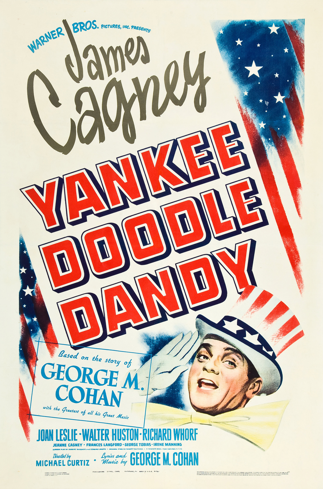

Yankee Doodle Dandy
15th Academy Awards
(Oscars 1943)
8 Nominations, 3 Awards
| Nominations | ||
|---|---|---|
| Category | Nominees | Result |
| Outstanding Motion Picture | Warner Bros. | Nominated |
| Actor | James Cagney | Won |
| Actor in a Supporting Role | Walter Huston | Nominated |
| Directing | Michael Curtiz | Nominated |
| Writing (Original Motion Picture Story) | Robert Buckner | Nominated |
| Film Editing | George Amy | Nominated |
| Sound Recording | Nathan Levinson | Won |
| Music (Scoring of a Musical Picture) | Heinz Roemheld and Ray Heindorf | Won |